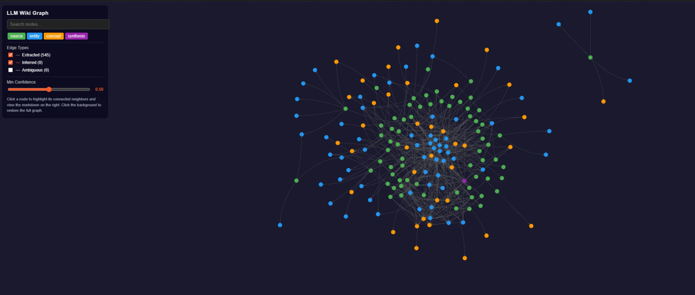

IA LOCALE · GRAPHE DE CONNAISSANCES · AUTO-INGEST
LLM Wiki
Une base de connaissances auto-entretenue : les sources sont ingérées automatiquement, entités et concepts extraits, et tout est relié dans un graphe de connaissances consultable.
RÉSULTAT
Sources ingérées automatiquement et reliées dans un graphe de connaissances de plusieurs centaines de nœuds — entièrement en local.

01 LE PROBLÈME
La connaissance s’éparpille entre notes, documents et conversations. Je voulais un système qui ingère, résume et relie automatiquement les sources — pour que la vue d’ensemble grandisse au lieu de se diluer.
02 CE QUE ÇA FAIT
- Ingest automatique
- Déposez une source dans l’inbox et le wiki l’ingère : résumé, affirmations clés, entités et concepts en sont extraits automatiquement.
- Graphe de connaissances
- Tout est relié dans un graphe consultable de centaines de nœuds et de relations, avec des types distincts pour sources, entités, concepts et synthèses.
- Synthèse vivante
- Une page de synthèse est réécrite à chaque ingest, pour que le fil rouge à travers toutes les sources reste à jour.
- Local & privé
- Tourne sur de l’IA locale ; toute la base de connaissances reste sur votre propre machine.
- Maintenu en bonne santé
- Des contrôles intégrés sur les pages orphelines, les liens cassés et les contradictions gardent la base cohérente.
03 CE QUE J’EN AI APPRIS
La valeur n’était pas dans encore plus de notes, mais dans les liens entre elles. Dès que ingest, graphe et synthèse ont travaillé ensemble, une simple collection de documents est devenue un vrai système de connaissances.
INTÉRESSÉ ?
Parlons ensemble.
Dites-moi ce que vous en pensez — ou ce que vous aimeriez en faire.